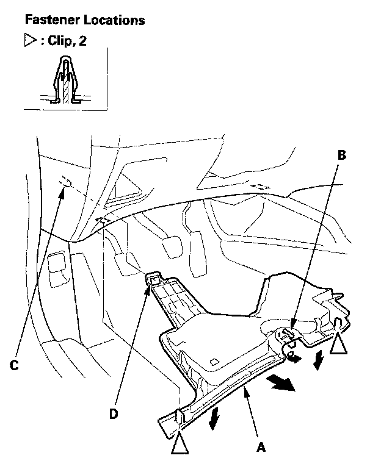

Driver's Dashboard Undercover
Driver's Dashboard Undercover Removal/InstallationFor Some Models
NOTE: Take care not to scratch the dashboard and related parts.

1. Remove the driver's dashboard undercover (A).
1. Turn the lock knob (B) 90 degrees.
2. Gently pull down the rear edge to detach the clips.
3. Pull the cover away to release the pin (C) from the holder (D).
2. Install the cover in the reverse order of removal, and note these items:
- Check if the clips are damaged or stress-whitened, and if necessary, replace them with new ones.
- Push the clips into place securely.